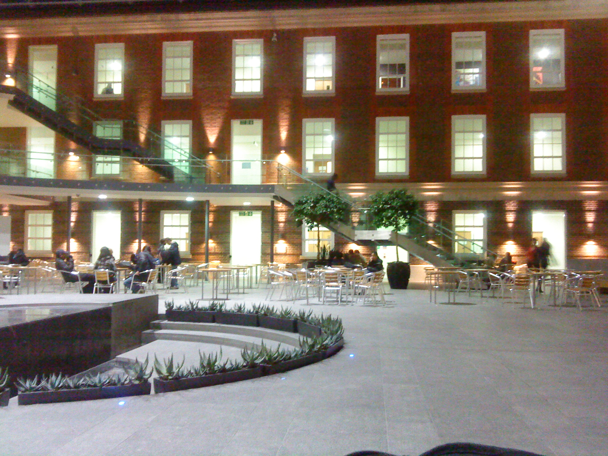
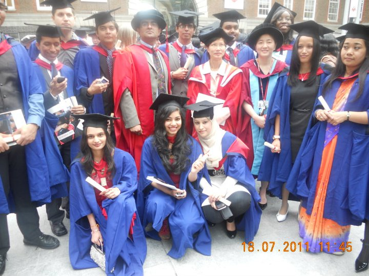

MY BLOGS
Cherry Tree
Today, 3rd of June 2011 and 24 degree outside. I am enjoying starting of summer in London,since my initial plan to go British Library was cancelled.. I was pepping through my room's window with some music on my mobile. My flavour was music with reading novel sitting on park with sun above me and wind wishpering to my ear n blowing my hair. However, today being my day off. I am unable to go park with "The Choice " by Susan Lewis. Therefore I am at my room, Watford- Way, Hendon, near highway 20 minutes walk from Hendon tube station. There is rows of two-bed room houses.After I had spent half day playing with my lovable,wonderful small netbook. I was just sitting near by my window to finish my pending work. But something drag to write this. Vividly, I can see two green and healthy Cherry trees with red color on it's tip. Initially I thought it was flower but just remember 1 month ago, white flower blooming on it as if white carpet. It was really amazing view through my window.These tree used to light at night. Then, I realised it is Cherry trying to pircering with greenish red. OMG!!! a bared tree had given fruit tooday. On the end of Autumn, they were naked and then after covered with white snow. When I used go to take bus, it used to shine on Moon to show my way. I am very thankful to u.I dont realised time but it had left me 1 years back...I mean I am 1 year old with new experience and lots of thought on me. 'em wondering that me time passed so quick that I dont realised how can i managed to be away from family all most 20months. Really!!!!it is wonderful to live for oneself, enjoyed freedom, think about oneself though it is selfness in the eye of world. Actually, I would like to named as "SELF" life.  I can remember September 2009, when for first time I left my home and came to land where there is nobody with zero idea and vancant heart. Those days in Uni(University) was marvellous and remains in my memory forever. Getting up at 8am and get ready, hurry for Uni. And I cant forget my econometric class, always rush to get attended. We used( me and my friend Grish)to be late coz of crazy facebooking ...... hehehhehehhehehehehehe.... Anyhow we managed ourself(6s- Pinky,Grish,me,Hemu,Bimlii(sorry la), Nishan) in mid-row and our attended, our murmur. If I am not mistake then I just miss 1 day attendation but never miss her(Michella) class. She was wonderful lady, who tried her best effort to give good knoweldge of econometric.coz of her I could do best and this module is one of my vain till now.Apparently, this model was seemed to be most hard. And yeaaa no doubt it was really hard to understand regression, interptation, beta and alpha coefficientttttsss and lots of regressionss..ssss on slide. OMG!!!my mind went to spining for whole days when I try to interptation R-square and correlation cofficient. I muddled both of them....and specially probabilty figure ....I mean p-value(right value and left value)....anyway I coped with it.The most hardest class was dummy.....very very confussing...... I am very thankful to u Ashi.....it's all because of u that I had done... u inspired me and taugth me lesson...support me in all way....dicussion, combined study all those stuffs gave me strength on those days....u are angle for me.i dont word to thx u as well... I can remember September 2009, when for first time I left my home and came to land where there is nobody with zero idea and vancant heart. Those days in Uni(University) was marvellous and remains in my memory forever. Getting up at 8am and get ready, hurry for Uni. And I cant forget my econometric class, always rush to get attended. We used( me and my friend Grish)to be late coz of crazy facebooking......hehehhehehhehehehehehe....Anyhow we managed ourself(6s- Pinky,Grish,me,Hemu,Bimlii(sorry la), Nishan) in mid-row and our attended, our murmur. If I am not mistake then I just miss 1 day attendation but never miss her(Michella) class. She was wonderful lady, who tried her best effort to give good knoweldge of econometric.coz of her I could do best and this module is one of my vain till now.Apparently, this model was seemed to be most hard. And yeaaa no doubt it was really hard to understand regression, interptation, beta and alpha coefficientttttsss and lots of regressionss..ssss on slide. OMG!!!my mind went to spining for whole days when I try to interptation R-square and correlation cofficient. I muddled both of them....and specially probabilty figure ....I mean p-value(right value and left value)....anyway I coped with it.The most hardest class was dummy.....very very confussing...... I am very thankful to u Ashi.....it's all because of u that I had done... u inspired me and taugth me lesson...support me in all way....dicussion, combined study all those stuffs gave me strength on those days....u are angle for me.i dont word to thx u as well... 
After econometric class we used sit down for seminar and do some exercise then Banking class....Oh god!! sweet voice near drag us to sleep. I am sorry for that(tutor). But it was true. may be either her sweet voice or may our lunch since it was after our lunch time, drags us in our dreamland. It was interesting class talking about international Banks, model or I mean modelling them.Our day used to end with end of Banking lecture, very excitied to go back to home and had our dinner.Unluckily!! now nobody is there to wait for us to served meal. So we had to feed ourself.It was quite interesting but sometime I really miss U MUM and foods always waiting for me.Sometime we used to gather to Puris' Hostel to have dinner together. Oh!! sorry she is also one of our friend from Marketing. We had to be thankful to her for providing sweet and warm accomdations and food whenevery necessary.As next day begins same routine, rushed for 186....shit bus missed, waited for next. and again late for co-operate lecture. Actually it was not problem for us coz he was not tight for attend. Nishan nearly appared in class....I mean either he is late or went to sleep at morning...so cant wake on morning...n his excuse was " bal chhaina" means whatever gone, no problem for him...sorry dear Nishan. But ur were only spirit of our group, who makes us to do job clam specially on assisgment period.I am thankful to u as well to provide clamness on assisgment period. I cant forget You Hemu, who tried to stop our facebooking n ur were amazing in our group specially in software. N Bimlli (Bimal,plz dont be angry) i know u wont mind... lol.... ur discussion and arugment had increase my knoweldge. Pinky,really missing u...ur such a sweet and cool lady that I ever had seen..... Grish...black beauty gal with sexy eyes(i dont know i should say here or not....if my words are bitter plz plz forgive me) i cant forget u forever....u were first friend to share my room after my sis. Yea!!! I was bit bossy to u....sorry for that dear...I should have known about ur freedom....but how we had spent, delicious and mouth watering foods, ur deliberating doing stuffs will never gone to erase from my memory......
"The Choice": very short review
"The Choice: Susan Lewis " is one of most heart touching novel I had ever read. She had Portrayed free living, relationships, truth and believe, friendship, love and uncertain challenges on life. The life which Nikki choice to live with her frens( Danny, David and Kristin) and her boyfriend (Spence) and baby(named as Zac) on his way.She is twenty, love to write. She and her friend make good team for film industry. Spence is good director, Danny good manager and production, David good camerman, Kristin as good actor and Nikki herself as good writer. Eventually after their work on "Done with the night", Spence got chance to emerge on film industry on London with great film directory Drake. then after he manage all of his friend to get through film industry and trying his best to Nikki. The work of Spence was sharpen in better way and even Nikki was ready to start new scripit for Drake coz he was very impressed with her Done with the night.The time was moving, everyone was moving with their carer except Nikki but she was also getting to give birth Zac. She gave birth. Everytime .She wrote journal for Zac, so he can read when he will be grown up.Everybody were happy and welcomed small junior with great celebration.David and Danny moved in new relationship leaving Kristin along aside.Though they were moving to London they usually visit to Nikki so she wont feel lonely and they also love Zac. At second day David produce thousands of his pic that he had captured in hospital.Mrs A(Adani) , David's mum,is one most beautiful lady and helpful to those young children specially to Nikki. She guides them in right way and she was just like grandmum to Zac and was health visitor to him as well...... They were happy and trying to be best mum and dad of world untill they discovered a serious Tay- Sachs , attacking their only one most beautiful, handsome, adborable son, once in morning when they found Zac chock with breath.Specially, it touches my heart how she had describe sudden death of 3 week baby(Zac) of Nikki, who is suffering from Tay- Sachs, once in morning as Nikki woke from sleep and later Police charged her as murderer of her only one son.....I was on tear wen I read the line and every words to explain it scene. It's really tragedy to see mum and dad that their children approaching toward death and more painful to know date of baby death......
HaPpY bIRtHdAy
02-12-11 at 0.00hr mobile buzzed since i was totally death. It was Anita.."HAPPY BIRTHDAY TO YOU". I replied " THANK YOU". I cant speak any more word and jst heard from go for sleep. Then I went back to sleep.Again it buzzed- 0.02hr, this tym it was Purnima " HAPPY BIRTHDAY TO YOU. Sleeping.go to sleep". And I went back to sleep. After half hour wake up and remembered my birthday and wish myself. May be sound crazy or funny but I did it. I got text message from Sarad and replied her. She called be back and had a little chat. Actually I was missing something.....Wish from my housemates..OHHH I mean from Sonu, Youbraj and Rahul. 0.30hr no wish, no message, nth...feel bad and ignored.And think they are sleeping and had to go for job early in the morning. I excused them. I opened my laptop- beepingggggg but still vacant covered on my heart. FAcEbOOking....obvious!!! |Go through some notification and new update...nth to see... I found new friend jst send me message Happy birthday and replied. I get some messages and replied them.This chat went for while and internet went off. Silly internet went away and came again. Start chating and some old school friend Paras messaged me and wished me. We went on talking and exchaged our skype id and had g8 voice chat after an ages. We remembered our past how we used to be, some affairs of some guys in our class, how tym changed and changed us as well, remembered most of those school life. We wished to go back to those days again. we talked abt all most every1 and changes on them. Thank you so much..We talked abt 1 and half hour. Paras I just remembered you as small, tiny, slim boy in our class and always cheerful but now its different. And still love those days when 3 lizards(U, Amrit and Suraj) used to back of bench and used to pull hair specially Sharmilas' one. Our T.N. Sir, never foregt him everytym asked series of gases and their electronic no. and stym valency in Science class.Frade up with it.Me and Sharmila used to hide from him. However he used to find us. And optional math most terrible subject in class 8. Anyway for me because of him i interested on optional math and can scored good marks. Class 9 and Class 10 went through different incidents in class which i cant expained here. Since we are growing up as teenager, gals and boys created certain gap between them and specially me ..went far away from friend...jst remind with study,me and my world....irrated, annoyed, aggrogated, saddness filled me...may be coz of financial broke in house, every single day quarrle at home, goosip of society, differentate between gals and boys, created boundary for doing any kind of work.......i hate it and gave me very bad envirnoment. Oh lord!!! its 4am early in morning and had go back to sleep. But still we were talking abt our past life. At 5am I went to sleep after I checked notification. Noone of my housemate wished me...really it was wired. I woke at 10am, which I never do. And call to Anita but no reply. Then I called to Puri and had a chat for abt 1 hr. Now it is 11am still on bed doing nth. Actually feeling lazy and unhappy for nth. I jst washed my face and go down to prepared food.Now it was 12pm and that day was sunny and windy. But for me it doesnot make any different. While I was prepared to cook...Mr. Basnet(Youbraj) came kitchen and bolied milk but didnt spoke any word expect Good morning. It was strange becoz he never used to greet us before. I jst response to it. He went outside and came back after a long tym.....after having milk aroun 13.00hr he spoke "HAPPY BIRTHDAY HAI". I was jst like What? i didnt reply to him and keep quiet and again same phrase from him. Then I jst started nagging abt cake, gift,chocholates,cards adn wishes at mid nite. As usual he got some excuse to get ride of it. And even told me we will celebrate on Tuesday.Honestly, he is the book of excuses....Sorry k...At 14hr Sonu called him and wished me.After having food i went to have shower. Really the day become miserable to me. Always I had dreamed abt my birthday. The day become miserable for me..sad for whole day expecting some1 to wish me and no wish and nth for whole...but suddenly at end of day give me suprises.... The day went on miserable. Youbraj cleaned his room and house....And then have shower amd went outside to collect watch of Sonu. Again I had chat with Mr. Paras K.C.(hhehehehhehehe) and found 1 more school friend (Er. Bikram Shrestha) online. I had good chat with some of other firends. We all three had conference call on skype. I had to thanks to Skype. Skype ur such a wonderful, which let us(3) talked lively after 9 years. They, both wished me on the same tym. It was amazing to hear from those 2 guys and let me feel special for them. Thank you u to 2 pepole...and sorry to Bikram because we didnt let u sleeppp.....hehehehehehhe...bal chhaina.......after having talk with you guys I realised we grown up now...we are not those small kids when we first tym at Bhaktapur English Secondary School. Suddenly I heard noise on ladder and voice of Sonu, singing, coming up.After Sonu came upstair then I realised Mr. Basnet took long tym to back home from Brent Cross. I went downsatir they(Youbraj ansd Sonu) was preparing for puja and lots of mouth watering food.And Mr. Basnet having food since stym his hungerness jst came out without any reaso hehehhehehehe and Sonu came out with Duvet issues and even i agreed with them that i had buy 1 and it may be expensive now.... suprised !!!!haa.....then Rahul came in the mean tym....he didnt knew it or jst acting i couldnt sense it. after he came to know my birthday he wished me but i jst say No thank you....but I didnt know why did i spoke it. Again Mr. Basnet start teasing me reagrding Cake, gift and birthday party from me. i jst had simple agrument abt cake and tomorrow birthday party.......actually it was jst mastiiii.i know there will be puja but no sure abt cake. I went to see big freeze because we got two freeze. I was going to open next freeze i jst stopped myself. and did sth other. Sonu went to have bath and prepared myself. Sonu did puja.Really i was shocked when they gave 13.5 tog Duvet as gift.I dont have word to speak for them.we finished our puja with some funny clips....lolz....then we were ready for snacks and again Mr. Basnet remind me of Cake and size of cake. I was nagging bigger cake if u guys gave me tomorrow. But unforuntely there was no cake for today and he let me cut small fairy cake....hahahahahhahahahaha...it was fun..it jst remind me of niece when she told to all of us on his brothers' 2nd birthday he is supposed to cut 2 small cup cakes.....i gave it to every1 and even had meself. It was really funny for birthday gal to cut fairy cake....and he remind me of card. we had snacks and some music and dance.Rahul's act add falvour to it. U all really love and treat me as baby birthday gal.....hhehehhehehehehe....happy happy happy ever before.......Thank you guys!!!! then i asked them to have dinner but they refused to have it. All of them jst went to sleep but no nidra in eye. i jst take nap on sofa and suddenly Mr. Basnet came downstair and say me good nite.....another wired behaviour... after 5 min i went upstair changed my cloth, wiped my eyelinear, washed my face...as I came out of bathroom I didnt see Mr. Basnet who was supposed to go for sleep, because their room's door was opened then i suspected on them. However I was ready for sleep...suddenly Mr. Basnet called me and Sonu for food... I reliped "NOOOOO". and Sonu call me. Then I was moving downstair...light was off and as soon as i reached near living roon light turn on and at 23.45(it is abt to) a big and huge noise of BIRTHDAY wishes and light of candles on big cake lying on table......Really i was speechless, froozen and cant spoke and cant move at all. I feel like I was dreaming. If i remembered properly I jst say NO...NO..NO....NO.....nth else.....even not THANK YOU TO THEM......Then Sonu ask me to blow candle and cut cake....then only i went and cut cake n unforuntely had very gentle cake fight and I wont forget Rahul's act which was really good flavour to my birthday.we waited for Puri....This was next suprises for me..Initally When we had chat she was not supposed to come because of her busy routine despite of her willingness to come on my birthday. After 00.00hr(03-12-11) she is there with card. we clicked some pics. and now card is there and my chocholate is there. I was overjoyed. Then we all together had dinner. It was already 1hr and i had job tomorrow. I dont have any word to you all guys expect THANK YOU....Thank you for supporting me and giving me g8 suprised cake, puja and all gift....i will remember forever.May be word writing here be less to expalin my happiness and thankfulness to all ofu.....THANK YOU TO YOUBRAJ BASNET, SONU SHRESTHA, PRUNIMA SHRESTHA AND RAHUL NANDA...LOVE YOU ALL.........and U TOO ANITA and ur increditable gift.... Wake up at 5.15hr ....hurry to go for job...take some cake for my client and sweet. when i opened my sweet.....what????No sweets....No sweets.... jst found some my birthday candle, oranges and i cant wake up any1 of them because they sleep late nite....anyway I managed it.....went for dinner at saturday nite...RAhul had to leave ealry because of Rani and Purnima couldnt make it because of job. we really miss u that day......